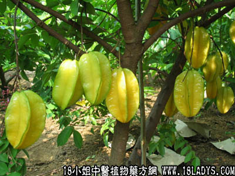

别名：酸三菍。
植物名：阳桃。
生长环境：本品为灌木或小乔木。广州近郊果园栽培。
分布：原产马来西亚，广州附近普遍栽培。
入药部分：果。
采集期：6～10月。
自采地点：家种。
性味：性微凉、味酸。
功能：健胃。
主治、用量和用法：1、肠胃食滞痛：干用3～5钱，清水煎服；2、伤风咳：用法同上。
附录：（根）治跌打积瘀：干用1～2两猪瘦肉适量，清水煎服。
（叶）功用同果实。
（花）治热咳：干用5钱至1两，猪瘦肉适量清水煎服。
（寄生）：1、治内伤咳血：干用1～2两，猪瘦肉适量，清水煎服。 2、治胃痛：用法同上。
（方歌）三菍味酸能健胃，多食甘肥可消滞，根能吊瘀花治咳，叶与果功同一例，还有寄生功用好，能医咳血与气滞。
按：三菍（或作三敛）果身瘦，生熟具甚酸；杨桃果身肥满，生果甘酸，成熟时甜中带微带酸味，宜区别。